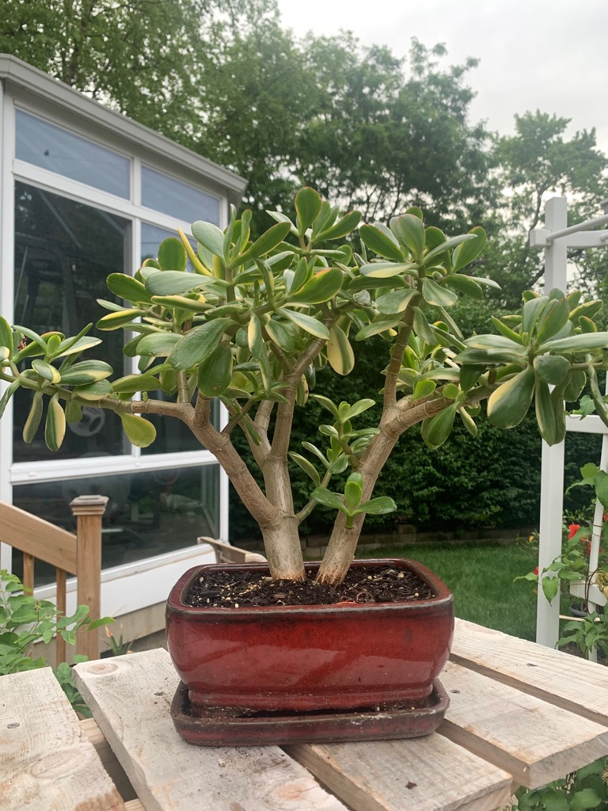
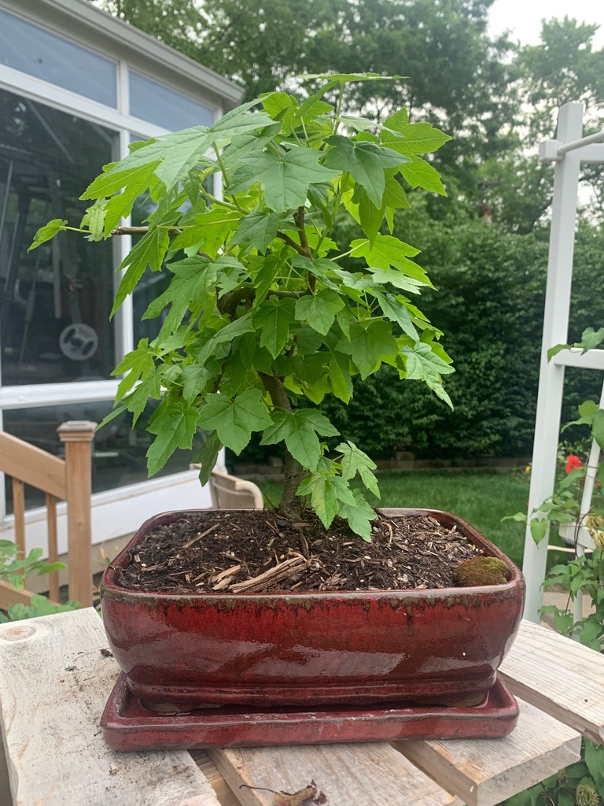
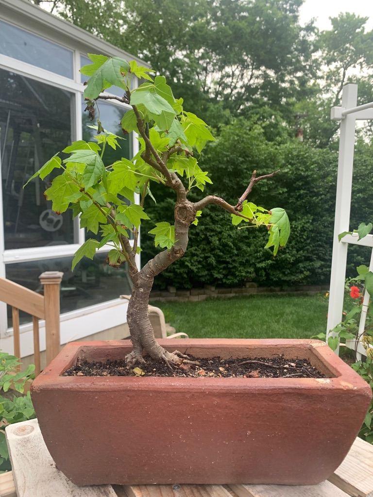
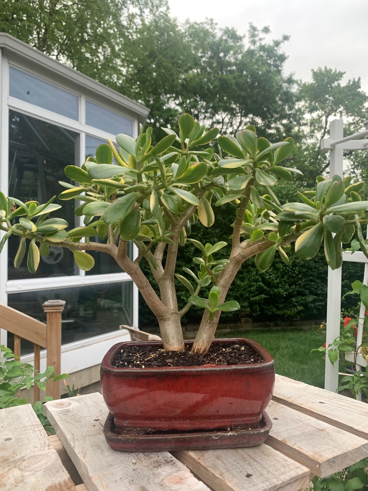
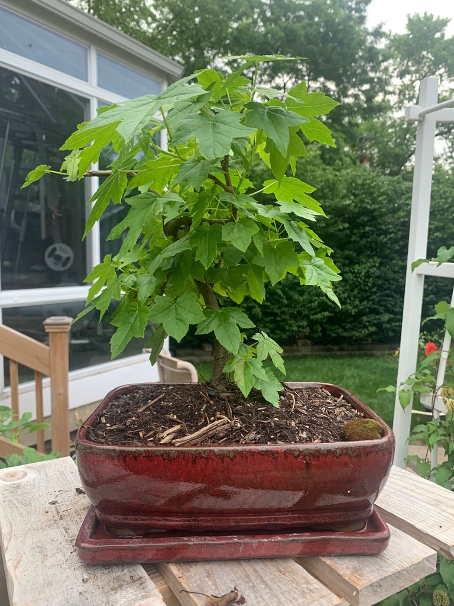
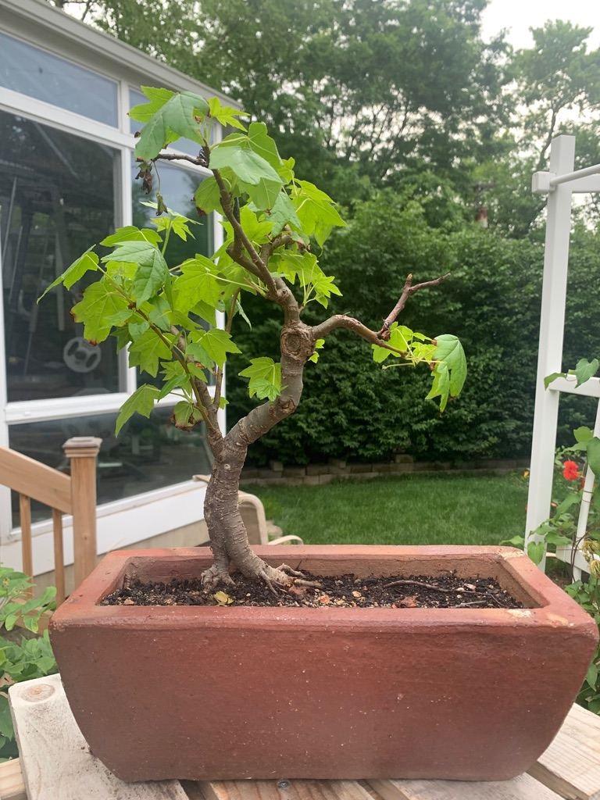

If you are interested in growing your own bonsai at home, I suggest you start with the following:
When starting out, stick to the basics. Study up on:
I was happy when I could finally keep a bonsai alive for more that a year!!!
Once you finally learn the basics, you can start to learn about advanced topics like: